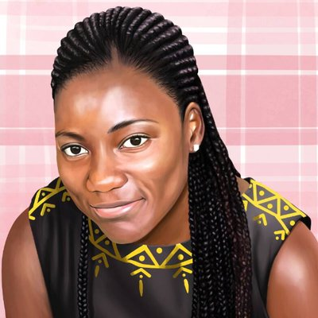

Foutse YUEHGOH
She is a Cameroonian researcher who loves singing and listens to music a lot. Her favorite sports are tennis, ping pong and volleyball. She aspires to inspire :), hoping to have a positive impact in the field of Natural Language Processing (NLP). In her free time, she loves to volunteer. Given her strong desire and passion to increase the active participation of women and young girls in STEM fields and above all demystify Artificial intelligence (AI) in her home country, together with her friends, she founded the KmerAI community, and co-founded WPSYG (Women Promoting Sciences to the Younger Generation) association. In addition to that, she is equally a co-organizer for the Women in Machine Learning & Data Sciences (WiMLDS), Yaoundé chapter and a volunteer at Black in AI. Foutse holds a Bachelor of Science degree in Mathematics and Computer Science (minor) from the University of Buea, Cameroon and two Master's degree - one in Big Data and Computer security, and the other in Information and Data processing from the African Institute for Mathematical Sciences (AIMS), Senegal and the University of Paris Saclay, France respectively. She is currently pursuing a PhD in Computer Science, working on the intersection of graphs and NLP for recommender systems. The main objective of her work is to define an optimized system for information retrieval and recommendation of technological development.“In vain have you acquired knowledge if you have not imparted it to others”. --Deuteronomy Rabbah. Let's get in touch!!!